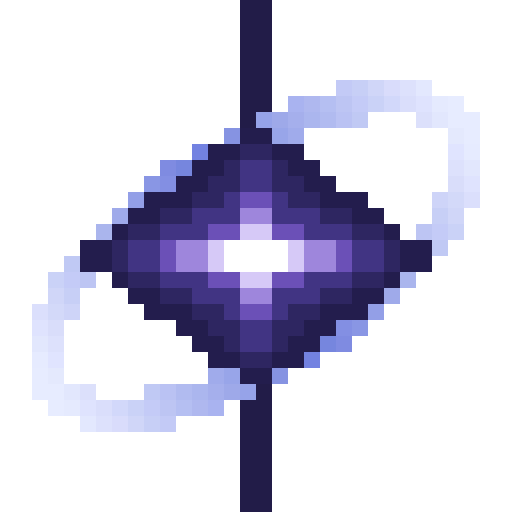

Sign in to play.
Your name is visible to other players. Nothing else is — no email is asked for and none is needed.
Orion runs Eaglercraft — a full port of Minecraft to WebGL and JavaScript — straight in the browser, in either 1.8.9 or 1.12.2. Add a server address once and it stays in your list, on this device, ready to join in one click.
Not sure which? Most servers expect 1.12.2, so start there if you are joining one. For playing with friends, 1.8 is the better bet — it is the stable build, and it can show a join code you can hand out, which 1.12.2 cannot.
You do not need a server to play together. Launch the client, make a singleplayer world, open it to other players, and your friends see it appear in their own list. How it works →
For a world that stays up when you close the tab. Orion hands the address to the client on startup, skipping the menus.
Your server list is saved in this browser and never uploaded. Export it to move it to another device, or send someone a share link to add a server to theirs. If one will not connect, Diagnose works out why.
Add someone once and they stay on your list. When they are online you can see what they are playing and join them from here.
Nothing here is shared until you fill it in. Open a world to other players in the game, and paste the join code it shows you so friends can get in.
This is the easy way, and it is built into the client. One of you makes an ordinary singleplayer world and shares it; everyone else joins with a short code. No server to install, no ports to forward, no domain, no certificate.
Press Launch client, then Singleplayer → Create New World. Play it as normal. An existing world works too.
Press Esc and choose the option to open the world to other players. The client registers the world with your primary relay (see below) and reports that it is open.
On their Multiplayer screen your world appears by itself under “Scanning for games on your local network” — the relay is what tells them about it, so they do not need to be on your network or type anything. You can also show a join code from the pause menu if you would rather hand one out.
Keep the tab open and stay in the world. You are the server — if you leave, so does everyone else.
Any device, any browser. Nothing to install.
Under your server list you will see “Scanning for games on your local network”. Despite the wording, this is not limited to your house — the client is asking the relay who is sharing a world, so the host's world appears here even if they are on the other side of the planet.
That is the whole thing. If the host chose to hide their world, ask them to show the code instead and use that. If nothing appears, you are probably on different relays — compare the primary below.
The client asks a few things before you reach the menu. Normal, and only once per version:
| Screen | Seen on | What to do |
|---|---|---|
| Content Warning | 1.8 | Turn the profanity filter on or off, then Done. |
| Edit Profile | both | Pick your username and skin, then Done. This is the name other players see. |
| Default Username Detected | 1.8 | Warns the auto-generated name may be taken. Change Username, or Continue Anyway. |
| Important Disclaimer | 1.12.2 | Its author's own warning that 1.12 is early and buggy. I Understand. |
When a shared world will not connect, this is usually why. Two browsers normally talk to each other directly, and plenty of networks — school and office ones especially — do not allow that. A TURN server forwards the traffic through a host both sides can reach, which is the only thing that helps once a direct connection is impossible.
Orion supplies its own TURN servers, because the ones that came with Eaglercraft stopped answering in 2024. The client has no setting for this, so Orion applies them to every connection the game opens as it launches.
A relay is only an introduction service: it puts the two browsers in touch, then the game data goes directly between you. It never holds your world. The primary relay is the one a newly shared world registers with — host and joiner should have the same one reachable.
A normal Minecraft server does not speak WebSocket, so a browser cannot reach it. EaglerXServer is the plugin that adds that: it opens a WebSocket listener alongside your usual port and translates Eaglercraft clients onto your existing server.
You do not need a spare computer, and you should not leave your own PC running as a server for friends. A free host runs it for you.
FalixNodes hands you a real Minecraft server on their machines, at no cost and
without a card. You get a control panel: start and stop it, edit
server.properties, upload plugins, read the console. It is an ordinary
server — so everything on this page applies to it, EaglerXServer included.
Sign up on the link above and create a server. Choose a 1.8.x version so it matches this client — Paper or Spigot for a single world, or BungeeCord/Velocity if you plan to link several.
Open the panel's file manager, upload
EaglerXServer.jar into plugins/, and restart the
server once so it writes its config. Same jar, same steps as below.
In the panel, edit server.properties and set
online-mode=false, then restart. Without this every Eaglercraft
login is rejected. Details in step 2 below.
The panel shows the address and port allocated to you. Remember that the port
players need is the one EaglerXServer's listener uses, not the
25565-style Java port — check plugins/EaglerXServer/settings.yml.
Free hosts often give you an extra allocation for it; add one in the panel if
the listener needs its own port.
Add the address on the Servers tab and press Test. That single click is worth more than any guide on this page: it tells you whether the address actually answers, and if not, why.
wss://?
Orion is served over HTTPS, and an HTTPS page cannot open a plain
ws:// socket — so a free host that only offers unencrypted
ws:// will not work here, and no setting on your side changes that.
Some hosts put your server behind a TLS domain, which is what you want; others do
not. Press Test to find out in one click rather than debugging
blind. If it turns out to be ws:// only, host the server at home and
put a Cloudflare Tunnel in front of it instead — step 4 further down.
The release page ships several jars. You need EaglerXServer.jar; the rest are optional add-ons.
| Jar | What it is |
|---|---|
| EaglerXServer.jar | The one you need. Works on Bukkit/Spigot/Paper, BungeeCord and Velocity — the same jar detects the platform. |
| EaglerWeb.jar | Serves static files (like a client build) over the same port. Optional. |
| EaglerMOTD.jar | Richer MOTD and server-list icons for Eaglercraft clients. |
| EaglerXRewind.jar | Lets much older Eaglercraft versions (1.5.2) connect too. |
| EaglerXBackendRPC.jar | API for plugins that want Eaglercraft-specific player data. |
| EaglerXSupervisor.jar | Coordinates several proxies sharing one player pool. Large networks only. |
Drop EaglerXServer.jar into your server's plugins/ folder and restart once so it writes its config.
plugins/EaglerXServer.jar plugins/EaglerXServer/ # created on first start settings.yml # listeners live here
Eaglercraft players have no Mojang account, so the server must not try to authenticate them. This is required — logins fail without it.
# Paper / Spigot — server.properties online-mode=false # BungeeCord — config.yml online_mode: false # Velocity — velocity.toml player-info-forwarding-mode = "none"
In plugins/EaglerXServer/settings.yml, the listeners
section defines where browsers connect. Note the port it binds — that number,
not 25565, is what players put into Orion.
# shape of the generated config — keep the keys it wrote, # just confirm the address and port listeners: - address: "0.0.0.0:8081" tls_enabled: false
Forward that port on your router or firewall if players are outside your network.
This is the step people miss. Orion is served over HTTPS, and an
HTTPS page is forbidden by every browser from opening a plain ws://
socket. Your server needs a wss:// address — meaning a real
certificate for a real domain.
Three ways to get one, easiest first:
# 1. Cloudflare Tunnel — no port forwarding, free certificate cloudflared tunnel --url http://localhost:8081 # 2. Caddy in front of the listener — automatic Let's Encrypt play.example.net { reverse_proxy localhost:8081 } # 3. TLS inside EaglerXServer itself — point settings.yml at your # own certificate and key, then set tls_enabled: true
Add your server on the Servers tab, press Test to confirm it answers, then use Share to copy a link that adds it to anyone else's Orion in one click.
| Symptom | Usual cause |
|---|---|
| Blocked immediately | A ws:// address on this HTTPS page. Get a wss:// address — see step 4. |
| Times out | Port not forwarded, or the firewall is dropping it. Confirm the listener port from step 3. |
| Refused | Right host, wrong port — people often try 25565, which is the Java port, not the WebSocket one. |
| Connects, then drops | Certificate not trusted (self-signed), or a proxy in front that is not passing WebSocket upgrades. |
| Kicked at login | Online mode is still on. See step 2. |
Orion is the launcher — the menu, the server book, the launch button. The game itself is an Eaglercraft build, and two are already installed here, so there is nothing to set up. This tab is for checking those installs, or pointing Orion somewhere else.
Each version lives in its own folder under the location below — so
client/1.8/ and client/1.12.2/. Leave it empty to load
from this site, which is the normal case, or give an HTTPS URL to host the
(large) client files elsewhere.
Serving from another origin needs Access-Control-Allow-Origin on that
host. Loading from this site never does, which is why it is the default.
An Eaglercraft offline build is one self-contained
.html file. Orion cannot load that file as it stands: the page
sets its own launch options, so your server list and join-on-launch would be
discarded, and its boot code waits for a page event that has already fired.
node tools/unpack-eaglercraft.js Eaglercraft_1.12.2_u3_Offline.html orion/client/1.12.2
The tool handles both shapes in circulation — a signed build with its client
gzipped into a <style> element, and an unsigned one with the
client inline as a script — and prints the settings the new version needs.
Add an entry to orion/js/versions.js with the folder, the scripts
to load in order, and the two settings the tool printed:
optsMode and autoStart. Those describe how the build
wants its options and whether it starts itself.
Pages redeploys and the version appears in the picker. Files over 100 MB are rejected by GitHub — host those elsewhere and set the location above.
On launch, Orion writes this before the client evaluates — seeding the in-game
multiplayer list from your server book, passing your relays through, and setting
joinServer when you launched into a specific server. Shown for the
version currently selected.
eaglercraftXOptsHints when hintsVersion is 1, and
otherwise replaces eaglercraftXOpts with its own defaults —
so settings written only to the latter are discarded a moment later. The 1.12.2
build is the other way round: it reads eaglercraftXOpts and adds its
assets to it. Orion sets both from one object, so neither build can be given a
stale copy.
…
The client keeps its own copy of the server list once you have run it, so entries you add later appear as defaults rather than overwriting what you changed in-game.